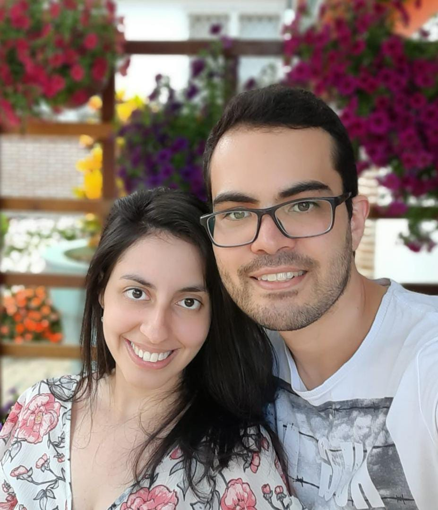

Olá, meu nome é Danielle, a artesã e idealizadora do Atelietta. Desde muito pequena sempre gostei de criar e cresci rodeada de arte, pois minha mãe já praticou várias técnicas artesanais, como crochê, ponto russo, pintura de tela à óleo e pintura em MDF.
Após me formar na faculdade de Letras, em 2017 descobri a Cartonagem, um universo apaixonante que permite a criação de diversas peças que variam entre maletas, porta-jóias, carteiras e agendas. Foi amor à primeira vista e desde então tenho feito vários cursos para explorar a técnica e me aperfeiçoar para entregar excelência.
Após a cartonagem, minha criatividade transbordou para o feltro e a confecção de bonecos e brinquedos e decoração infantil, e como uma coisa leva a outra, a costura de feltro deu uma impulsionada para dar uns passos também na costura criativa.
Já ministrei aula em uma franquia grande de tecidos e materiais artesanais, além de aulas particulares para várias alunas.
O nome Atelietta foi uma ideia conjunta entre mim e minha mãe, e surgiu da junção de ateliê + Antonietta, nome da minha avó materna, pois meu primeiro ateliê foi na casinha que um dia fora dela.